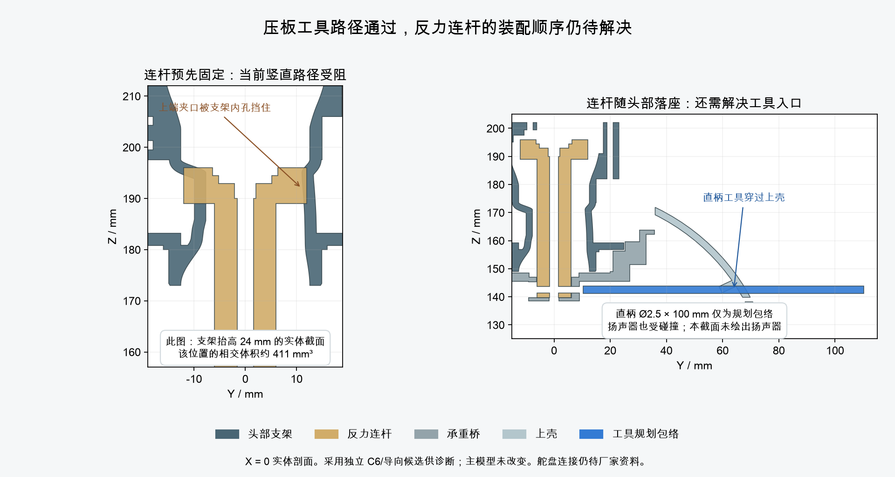

← 走线工作页压板工具路径已通过，整套装配仍待闭合
完整带线装配 BLOCKED
已批准的 K1 孔位与孔壁修正继续保留在主模型 M1.49。本轮补查安装顺序，没有改动主模型、STL、硬件或动画。
压板的两枚螺钉可以分开操作
头壳、屏幕和相机支架暂不安装。内侧头架分别转到 +60° 与 −60°，用长边朝下的工具逐枚操作，工具取出后再转头。
两次操作均检查了 150 mm 直线伸入／退出、完整一圈转动和实际螺钉的连续装入扫掠；避开了这两个姿态下的 11 条候选导线。工具按 Wera 950 PKLS 05022041001 的 2 mm 内六角、100／5.5 mm 边长建立保守包络。
图片使用独立 C6、导向和绑带座候选，尚未应用到主模型；省略导线显示以说明工具位置。导线目前仍是规划路径。实际球头啮合、拧紧扭矩、两次操作间的完整带线运动没有通过此检查。
逐步检查与明确缺件清单 · 渲染来源
反力连杆仍限制头部落座与锁紧

| 装配方向 | 结果 | 范围 |
|---|
| 先固定连杆，再竖直放入内侧头架 | BLOCKED | −60° 到 +60°、每 10° 一组均在落座路径中相交。零偏航时，抬高 24 mm 的相交体积约 411 mm³；不是首个接触点的微小数值造成的误判。 |
| 连杆随内侧头架一起落座 | 刚体采样 PASS；锁紧未闭合 | 0～90 mm 的 181 个竖直位置通过。连杆横向固定螺钉要随后安装；直柄工具受扬声器和上壳阻挡。 |
| 改用短柄工具，从未封闭的下部退出 | 局部姿态有空间，所测退出路径 BLOCKED | 20／25／30 mm 短边存在局部可放置姿态；23 个姿态、共 138 条简单退让路径均受阻。其他带转动的路径及实际工具选型仍未验证。 |
| 先留上壳抬起，之后再落下 | 所测路径 BLOCKED | 内侧头架已就位时，上壳原有 15°／14 mm 倾斜抬升路径在 −60°、0°、+60° 三个头部位置均碰到支架。 |
因此还不能把这套顺序交给装配执行，也没有据此增加开孔。SCS0009 原配舵盘及传动锁紧叠层仍待厂家资料，连杆附近的安装判断也须随真实接口复核。
头部落座清单 · 实际相交与直柄工具检查 · 短柄局部筛查 · 138 条退出路径
检查边界与修正记录
- 早期长边工具筛查要求同一偏航角能操作左右两枚螺钉，结果为 BLOCKED。本轮改为逐枚操作，保留早期报告，未覆盖其证据。
- 连续工具检查曾因凸包零面积三角形产生无效法向而中止；失败记录保留。修正仅影响检验算法，不改变零件实体。
- 螺钉扫掠按保存网格的实际头／杆边界分拆，并验证包络包含全部原始实体；避免把宽螺钉头的微小切片扩展到整根细杆产生假碰撞。旧结果保留在 history_screw_split。
- 更严格的本轮诊断还记录了候选承重桥与名义反力连杆螺母约 0.00847 mm³ 的相交，原因未定。没有以此修改孔位或豁免配合，待实际紧固件与传动接口一起复核。
- C6、导向和固定座均是未批准的独立候选；力学、材料与实物装配仍为 NOT_TESTED。
短边压板工具初筛 · 长边单姿态初筛 · 剖面图片来源